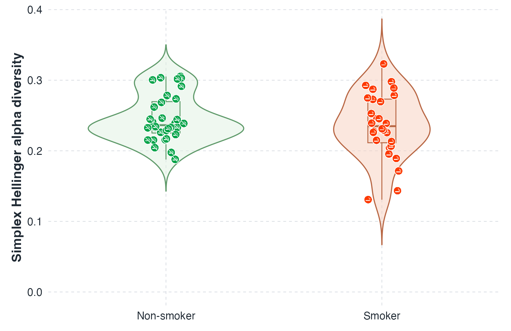

Simplex Hellinger diversity partition
HRIC defines alpha, gamma, and beta diversity in one intrinsic coordinate system. Alpha measures within-sample evenness, gamma measures cohort-level evenness, and beta is the residual turnover among samples.
Coordinate foundation
Hellinger-Riemann intrinsic coordinates
Let $\pi_i$ be the normalized composition for sample $i$ over $p$ taxa. HRIC maps $\pi_i$ to an intrinsic coordinate vector $Z_i$ on the Simplex Hellinger geometry.
Coordinate map
$A_p$ is the maximal Hellinger-geodesic displacement from the uniform composition to a simplex vertex. It normalizes the diversity summaries to a unit scale.
Interpretive anchor
Samples near the uniform center have small $\|Z_i\|_2^2$ and high evenness. Samples concentrated on a few taxa have larger displacement from the center and lower evenness.
Alpha and gamma
Evenness within samples and across the cohort
Alpha diversity is defined sample by sample. Gamma diversity applies the same evenness scale to the cohort center $\bar Z$.
Simplex Hellinger alpha diversity
This alpha diversity is an evenness measure. Values closer to 1 indicate a composition closer to the uniform center; lower values indicate stronger dominance by a subset of taxa.
Simplex Hellinger gamma diversity
Gamma describes the diversity represented by the cohort center in HRIC space. It increases when the cohort center is closer to the uniform composition.
Beta and turnover
Among-sample structure in HRIC space
Beta diversity is the difference between cohort-level gamma diversity and mean within-sample alpha diversity. Condition-relevant turnover isolates the part of total dispersion that is explained by separation among conditions.
Simplex Hellinger beta diversity
Larger beta indicates more heterogeneity among sample compositions after alpha evenness is accounted for through the HRIC coordinate center.
Condition-relevant turnover
$\delta$ compares total cohort dispersion with weighted within-condition dispersion. A positive value indicates turnover associated with condition-level separation.
Throat microbiome example
Non-smoker and smoker groups under HRIC
This throat microbiome contrast illustrates how Simplex Hellinger evenness, beta structure, and condition-relevant turnover are read together.

Simplex Hellinger alpha diversity summarizes within-sample evenness for each group, with sample-level markers shown over the group distributions.

PCoA of HRIC-based Simplex Hellinger beta diversity with condition-relevant turnover $\delta$ and the PERMANOVA p-value for the group contrast.
Software
R package interface
The HRIC repository implements Hellinger-Riemann intrinsic coordinates and Simplex Hellinger diversity summaries. The functions take a sample-by-feature table; count rows are normalized internally, and exact zeros are accepted.
# Install from GitHub
# install.packages("remotes")
remotes::install_github("yiqianomics/HRIC")
# Load the installed package namespace
library(ArcHellinger)
X <- matrix(
c(10, 20, 30,
5, 15, 80,
0, 10, 90,
40, 5, 5),
nrow = 4,
byrow = TRUE,
dimnames = list(paste0("sample", 1:4),
paste0("taxon", 1:3))
)
# Hellinger-Riemann intrinsic coordinates
Z <- HRIC(X)
# Reference-based coordinates
ZR <- RHRIC(X)
# Simplex Hellinger diversity summaries
alpha <- SHalpha(X)
gamma <- SHgamma(X)
beta <- SHbeta(X)
# Condition-relevant turnover
group <- c("Non-smoker", "Non-smoker", "Smoker", "Smoker")
delta <- SHdelta(X, group)Coordinates
HRIC(X) returns centered intrinsic coordinates. RHRIC(X) returns reference-based coordinates.
Diversity
SHalpha(X), SHgamma(X), and SHbeta(X) implement the Simplex Hellinger alpha, gamma, and beta summaries defined on this page.
Turnover
SHdelta(X, group) computes condition-relevant turnover by contrasting cohort dispersion with weighted within-condition dispersion.
References
Framework sources
These references support the geometry, ordination, and testing context used by the framework.
- Legendre, P., & Gallagher, E. D. (2001). Ecologically meaningful transformations for ordination of species data. Oecologia. doi:10.1007/s004420100716.
- Anderson, M. J. (2001). A new method for non-parametric multivariate analysis of variance. Austral Ecology. doi:10.1111/j.1442-9993.2001.01070.pp.x.
- HRIC R package. github.com/yiqianomics/HRIC.